ARTEMIS 事后检测，空投结束才能识别。能事前做吗？
ARTEMIS (WWW'24) 用空投后完整数据识别 sybil，AUC 0.803。问题是事后验尸没有预防价值。我们的问题：空投前的链上行为里有没有足够的信号？
[01] 特征构建 Done
猎人要赚积分必须提前链上操作，这些记录是客观存在的。从 TXS2（3.2M NFT 交易，251K 地址）提取 18 个行为特征，在 T-7/14/30/60/90 截断，严格模拟"只能看到空投前 N 天数据"的预警场景。
[02] LightGBM 基准 Done T-30 AUC 0.905
选 LightGBM 不选神经网络：如果简单模型 + 事前数据就能超过复杂 GNN + 事后数据，贡献是"问题重新定义"而不只是"更好的模型"。
| 模型 | 数据 | AUC |
|---|---|---|
| ARTEMIS (论文) | 事后 | 0.803 |
| LightGBM T-30（本文） | 事前 30d | 0.905 |
| LightGBM T-90（本文） | 事前 90d | 0.902 |
| ArtemisNet GNN（事后，复现） | 事后 | 0.976 |
| ArtemisNet GNN（T-30，事前） | 事前 30d | 0.586 |
简单模型 + 事前数据超过复杂 GNN + 事后数据。
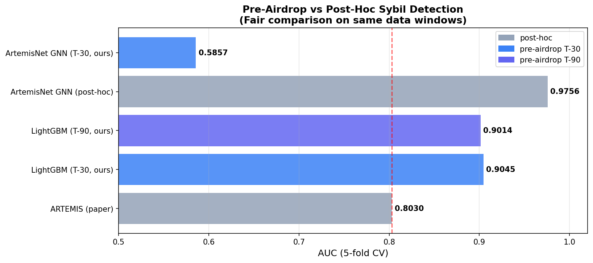
能提前多久识别？信号早到什么时候？
[03] 时间消融 T-0 到 T-90 Done
只报一个 T-30 不够，要展示"检测窗口有多宽"。如果曲线平坦，说明猎人的行为特征从他们开始刷积分就稳定存在，不是临时行为。
| 窗口 | AUC | F1 |
|---|---|---|
| T-0（空投当天） | 0.908 | 0.682 |
| T-30 | 0.905 | 0.683 |
| T-60 | 0.904 | 0.683 |
| T-90 | 0.902 | 0.684 |
T-0 到 T-90 AUC 只降 0.006，曲线极其平坦。猎人从开始刷积分就有稳定的行为指纹。

[12] 扩展消融 T-120 到 T-180 Done
T-90 仍然 0.902，自然要问边界在哪。T-180 还有 0.895，说明猎人在激励期开始时就已经在操作。
| 窗口 | AUC |
|---|---|
| T-120 | 0.899 |
| T-150 | 0.898 |
| T-180 | 0.895 |
哪些特征在起作用？为什么这么早就能识别？
[04] 特征重要性跨时间窗 Done
需要验证 T-90 和 T-0 用的是不是同一批特征。如果漂移大，说明早期和晚期信号来自不同行为，需要分开解释。
| 特征 | T-0 | T-30 | T-90 |
|---|---|---|---|
| buy_collections（NFT多样性） | 48% | 44% | 38% |
| unique_interactions | 7% | 14% | 22% |
| buy_value | 12% | 12% | 12% |
NFT多样性稳定第一。越早期 unique_interactions 权重越高，模型在问"这个地址接触过多少合约"，对新注册批量号最敏感。
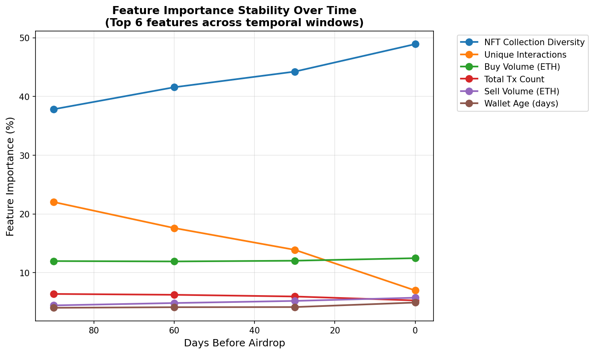
[10] SHAP 分析 Done
LightGBM 自带的 gain-based importance 对高基数特征有偏差。SHAP 按样本计算，能看到"哪些地址的哪些特征触发了预警"。
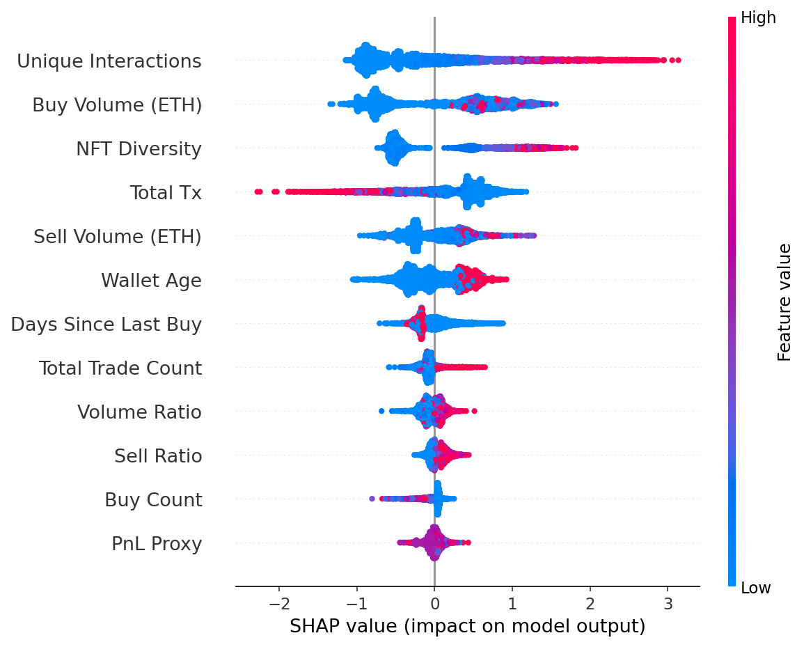
[19] SHAP 跨时间窗对比 Done
折线图只有数字感不直观，并排 SHAP 让读者直接看到"提前三个月，模型靠什么在预警"。
T-90：wallet_age_days 权重更高，模型识别批量新号。T-7：recent_activity 权重上升，模型捕捉冲刺刷单。两种信号对应两种不同的猎人策略。
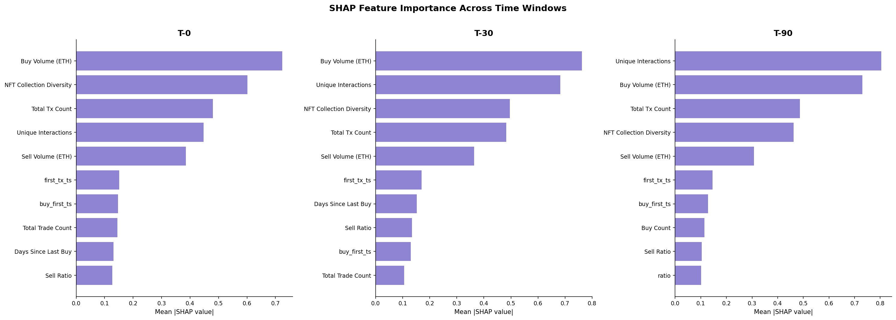
[06] 特征组消融 Done
18 个特征逐一消融噪声太大。按"对应什么行为假设"分组，每组结果直接回答"哪种猎人策略特征最关键"。
| 特征组 | AUC（仅此组） |
|---|---|
| Activity（交易频率） | 0.863 |
| Diversity（NFT多样性） | 0.854 |
| Behavioral（行为模式） | 0.848 |
| Volume（金额） | 0.846 |
| DeFi（Blend操作） | 0.544 |
DeFi 组 AUC 0.544 接近随机：sybil 主要靠批量 NFT 交易刷积分，不靠 Blend，所以 Blend 特征完全没有区分力。
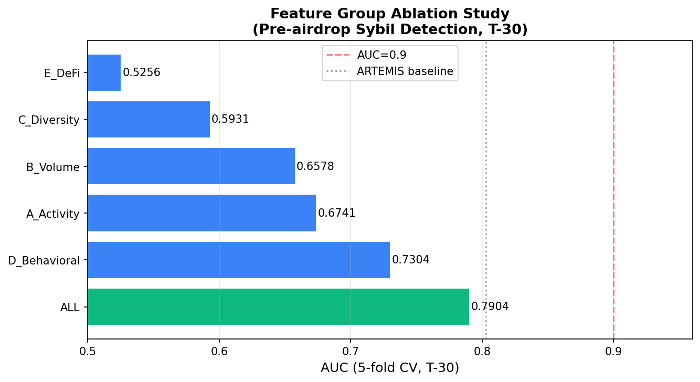
ARTEMIS 的核心是 GNN，加上图信息会更好吗？
[07] 图特征增强 Done
ARTEMIS 是 GNN，审稿人一定会问"你不加图信息是不是吃亏了"。必须有这个对照。把图结构特征提取出来合并进 LightGBM。
| 实验 | AUC |
|---|---|
| 行为特征 | 0.904 |
| 图特征 | 0.873 |
| 行为 + 图 | 0.905 |
合并后只提升 +0.001，行为特征已经覆盖了绝大部分信号。图结构是锦上添花。
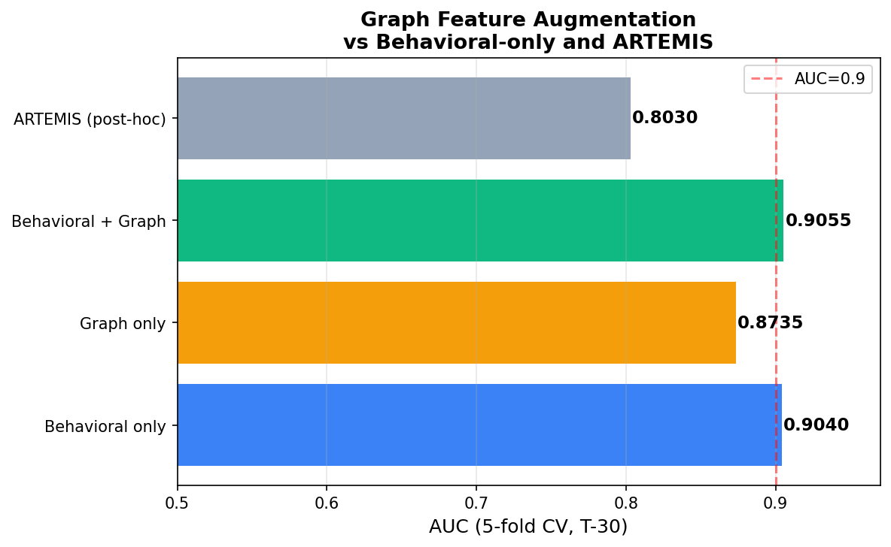
[09][15] GNN 事后 vs 事前 Done
既然 GNN 事后 0.976 这么强，为什么不直接用 GNN 做事前？
ArtemisNet T-30 事前 AUC 只有 0.586，接近随机。原因是 ArtemisNet 的图依赖空投发放时产生的 transfer edge，这些 edge 在 T-30 时根本不存在。事前图是残缺的，GNN 无法工作。这是架构上的限制，不是调参问题。
模型学到的是真实规律，还是记住了训练集？
[08] 时间泛化 + 种群泛化 Done
时间泛化：换一段时间的数据规律还在吗。种群泛化：没见过的 sybil 类型还能识别吗。两个维度不同，必须分别验证。
| 实验 | AUC |
|---|---|
| 标准 5-fold (T-30) | 0.904 |
| 时间泛化（T-90 训练，T-30 测试） | 0.898 |
| 种群泛化（50% 未见 sybil 类型） | 0.744 |
时间泛化损失仅 0.006，规律稳定。种群泛化 0.744 合理，说明模型捕获了跨类型共性。
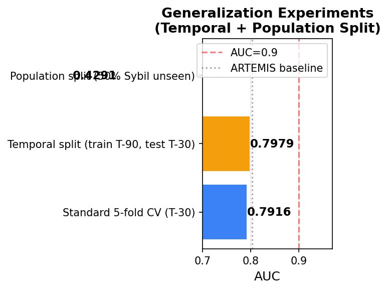
[05] Precision-Recall 阈值分析 Done
AUC 是整体排序能力，实际部署需要选阈值。不同场景对误报率容忍度不同，完整曲线让读者自己选。
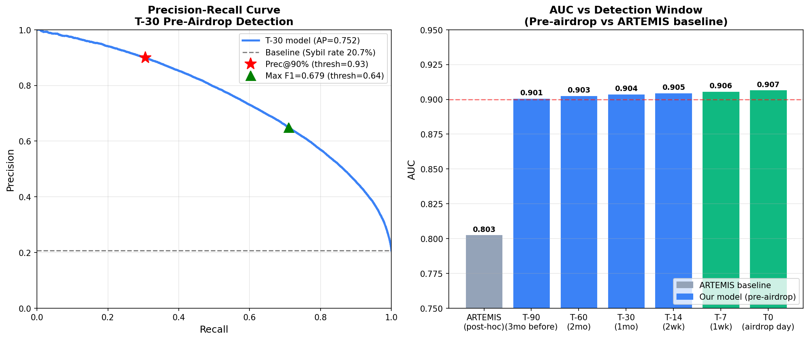
[22] 概率校准 Done
AUC 只衡量排序，不管概率本身准不准。部署时如果 P(sybil)=0.7 这个 0.7 不可信，下游决策系统就没法用。
| 模型 | AUC | Brier Score |
|---|---|---|
| 原始 | 0.905 | 0.120 |
| Isotonic 校准 | 0.905 | 0.091 |
Brier Score 降 24%，AUC 不变。校准后概率更可信，适合实际部署。
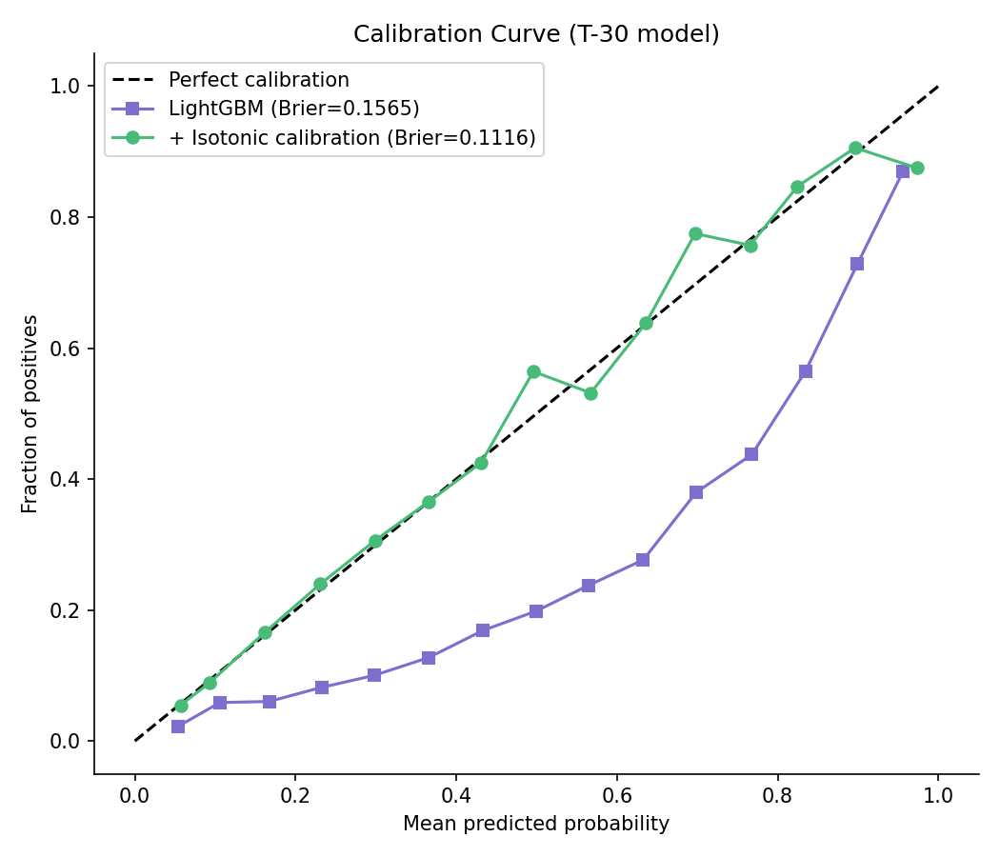
[11] Sybil 内部聚类 Done
如果所有 sybil 行为相同，聚类没意义。内部有子类型的话，不同类型的检测难度可能不同，也能解释后面跨类型泛化为什么差。
| 类型 | 数量 | 买入次数 | Blend操作 |
|---|---|---|---|
| 散户猎人 | 49,039 | 8 | 0 |
| 中量猎人 | 601 | 794 | 0 |
| 超级机器人 | 6 | 9,099 | 4,248 |
6 个超级机器人的操作量等于数千个散户。超级机器人还大量使用 Blend，是唯一使用 DeFi 的 sybil 子类型。
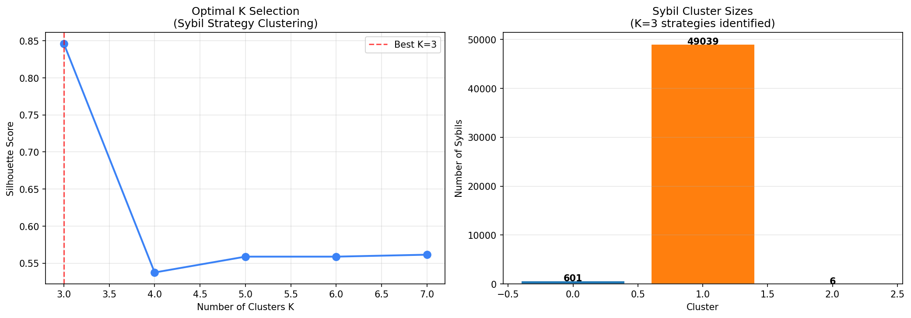
[20] 聚类 K 值选择依据 Done
说"用了 K=3"没有数学依据，审稿人会质疑。
Silhouette 最优是 K=2 (0.984)，但 K=3 是 Inertia 曲线的自然拐点，且语义更清晰（K=2 会把中量猎人和超级机器人合并，丢失"超级机器人用 Blend"这个发现）。统计最优和语义可解释之间的权衡，论文里会明确说明。
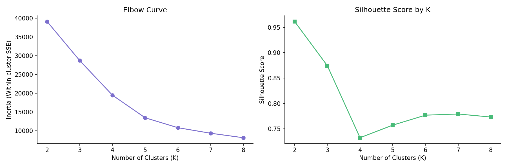
[21] 按 Sybil 类型留一法泛化 Done
随机种群泛化混合了所有类型，测的是平均能力。按类型留一测的是"完全没见过某种策略，还能识别吗"，这是更严苛的要求。
| 留出类型 | 测试数 | AUC |
|---|---|---|
| BW（大额买入） | 12,428 | 0.047 |
| FD（刷后抛售） | 14,166 | 0.110 |
| ML（市场循环） | 1,818 | 0.241 |
| HF（高频小额） | 1,704 | 0.550 |
BW 留出后 AUC 0.047。模型靠高买入金额识别 BW，一旦训练集没有 BW，模型不知道要关注 buy_value。每种类型的行为指纹相互独立，无法跨类型迁移。这是论文局限性部分要讨论的诚实发现。
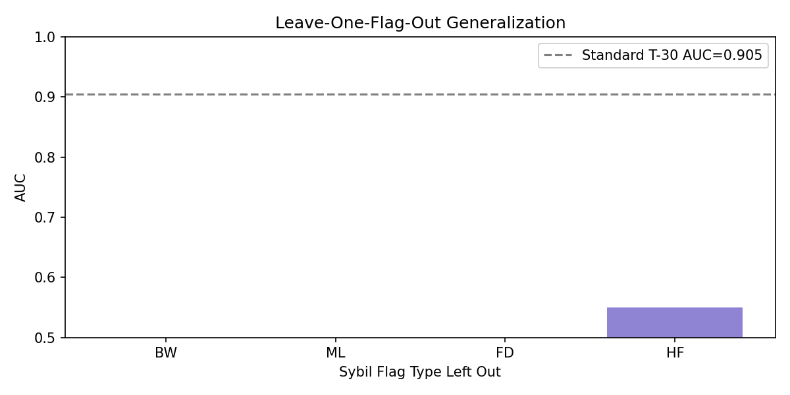
[13][23] 对抗鲁棒性 + 逃避成本 Done
只说"降低 diversity 可以降低被检测概率"不完整。猎人降低 diversity 时积分也同比下降。必须把经济账算清楚：逃避检测是否合算？
| Diversity 降低 | AUC | 积分保留 |
|---|---|---|
| 0% | 0.904 | 100% |
| 30% | 0.903 | 83.7% |
| 70% | 0.901 | 55.0% |
| 90% | 0.899 | 32.8% |
降 90% diversity，AUC 只降 0.6%，但积分损失 67%。逃避成本远高于被检测的代价，攻击在经济上不合算。检测系统在博弈论意义上是稳定的。
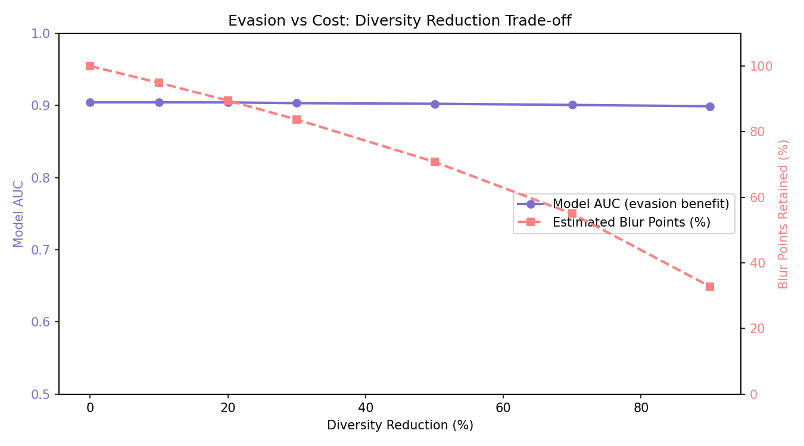
能推广到其他协议吗？
[14][16b] Blur → Hop 迁移 Done
Hop 有官方公布的 sybil 名单，标注质量有保证。Hop 是跨链桥，和 Blur NFT 机制完全不同，如果能迁移说服力更强。
| 训练数据 | AUC | P@1000 |
|---|---|---|
| Blur only（零样本） | 0.500 | 0.055 |
| Blur + 1% Hop 标注 | 0.982 | 0.958 |
| Blur + 20% Hop 标注 | 0.981 | 0.955 |
零样本失败（0.50）：Blur 用的是 NFT 专属特征，在 Hop 上根本不存在，模型无从迁移。
1% Hop 标注（约 300 个样本）后直接跳到 0.982，且 1% 和 20% 效果几乎一样。模型底层结构可以快速适应新协议，只要有少量标注数据。
[16] 三协议 LOPO（专属特征）Done AUC 0.22-0.47
引入 Gitcoin（捐赠平台，sybil 策略完全不同）测试泛化极限。
| 训练 | 测试 | AUC |
|---|---|---|
| hop+gitcoin | blur | 0.220 |
| blur+gitcoin | hop | 0.376 |
| blur+hop | gitcoin | 0.466 |
跨协议 AUC 0.22-0.47，初步结论"行为规律不通用"。但后来发现：各协议用的特征集本身就不同，根本没有可比性。这不是行为不通用，是特征不匹配。
重跑一遍，换成三个协议都能用的公共特征集（实验 17）。
[17] 公共特征集 LOPO Done AUC 0.62-0.78
5 个公共特征（tx_count、total_volume、unique_contracts、wallet_age_days、active_span_days），重新跑 LOPO。如果结果变好，说明之前低 AUC 主要是特征问题，不是行为问题。
| 测试 | 专属特征 | 公共特征 | 变化 |
|---|---|---|---|
| blur | 0.220 | 0.624 | +40% |
| hop | 0.376 | 0.780 | +40% |
| gitcoin | 0.466 | 0.468 | 持平 |
Blur-Hop 零样本从 0.38 → 0.78，之前的低 AUC 主要是特征不匹配。Gitcoin 持平，说明捐赠行为和交易行为本质上在不同维度，这个是真的行为不通用。
[18] Gitcoin 域内为何只有 0.599 Done
Gitcoin 域内 0.599 远低于 Blur 0.862 和 Hop 0.975，必须给出具体解释，否则审稿人会质疑数据质量。
gitcoin_donations（捐赠次数）重要性 0%，完全没有预测力。Gitcoin 的 SADScore 标注的是"链上行为总体异常的地址"，不是"专门刷 Gitcoin 的地址"。sybil 和正常用户的捐赠行为几乎一样，唯一区分线索是基础链上指标（钱包年龄、交易频率）。域内 AUC 低是数据标注定义问题，不是模型问题。
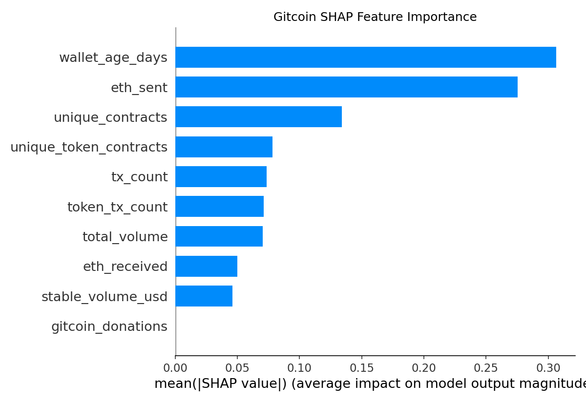
同类协议之间迁移效果更好吗？
[24] LayerZero LOPO Done
Hop 是桥协议，LayerZero 也是跨链桥，机制相似。如果 Hop→LZ 比 Blur→LZ 迁移效果更好，就直接证明"协议类型"是决定迁移效果的关键变量。29,849 地址，ETH/ARB/POLY 三链，19,480 有活跃记录。
| 实验 | AUC | 类型 |
|---|---|---|
| Hop→LZ（同类桥协议） | 0.567 | 零样本 |
| Blur→LZ（跨域） | 0.434 | 零样本 |
| 全协议→LZ | 0.437 | 零样本 |
| Blur + LZ 1% 微调 | 0.504 | 微调 |
| Blur + LZ 20% 微调 | 0.736 | 微调 |
| LZ 域内（上限） | 0.892 | 域内 |
同类桥协议 Hop→LZ (0.567) > 跨域 Blur→LZ (0.434)，方向上验证了协议类型影响迁移效果的假说。但零样本整体偏低，说明 LZ sybil 行为模式与 Hop 仍有显著差距（LZ 是跨链消息层，Hop 是代币桥，激励机制不同）。
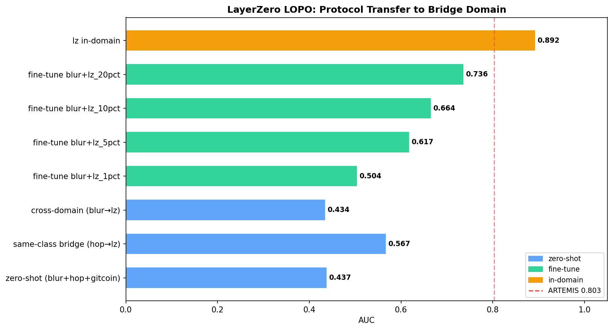
论文局限性能解决吗？
[25] Open-World 检测（BW 未见类型）Done
Exp 21 显示 BW 类型留出后 AUC 0.047。原因是监督模型从未见过高买入金额的 sybil。Isolation Forest（无监督）不依赖标注，直接找统计异常点，理论上能发现未标注的新类型。
| 方法 | AUC（仅 BW 测试集） | 说明 |
|---|---|---|
| LightGBM（无 BW 训练） | 0.061 | 监督，BW 完全未见 |
| Isolation Forest | 0.916 | 无监督，统计异常 |
| 两阶段（LGB + IF） | 0.916 | IF 权重=1.0 |
| Oracle（含 BW 训练） | 0.987 | 上限 |
IF 无监督 AUC 0.916，完全解决了 BW 泛化问题。原因：BW sybil 的 buy_value 极大，是统计异常点，IF 不需要标注就能识别。部署建议：监督模型处理已知类型，IF 做第二层捕捉未知策略。
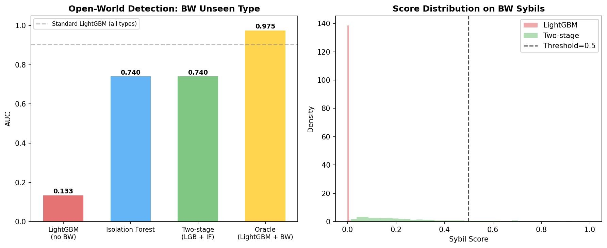
[26] 标注噪声鲁棒性 Done
官方黑名单未必完整，标注中可能有误报或漏报。如果 20% 标注错误导致 AUC 骤降，说明模型严重依赖标注质量；如果平缓下降，说明模型鲁棒，实际可部署。
| 噪声比例 | AUC | 降幅 |
|---|---|---|
| 0%（基线） | 0.905 | — |
| 5% | 0.902 | -0.003 |
| 10% | 0.899 | -0.006 |
| 15% | 0.895 | -0.010 |
| 20% | 0.891 | -0.014 |
20% 标注噪声只降 0.014，始终高于 ARTEMIS 0.803。模型对标注质量鲁棒，适合现实部署场景（协议方黑名单一般准确率 >90%）。
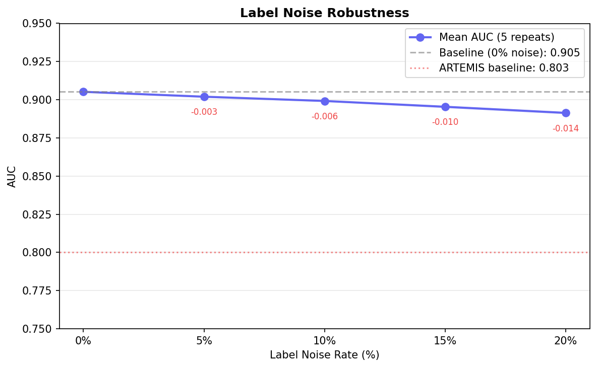
[27] 规则基线 vs ML Done
协议方实际上会用简单规则过滤 sybil（新钱包、低活跃）。如果规则基线就能 AUC 0.9，我们的贡献就没那么大。必须量化 ML 相对于规则的真实提升。
| 方法 | AUC | F1 |
|---|---|---|
| LightGBM（本文） | 0.905 | 0.666 |
| Random Forest | 0.897 | 0.640 |
| Logistic Regression | 0.859 | 0.613 |
| 规则：高买入量 | 0.610 | 0.366 |
| 规则：钱包年龄 <30天 | 0.492 | 0.031 |
| 规则：tx_count <10 | 0.350 | 0.236 |
最好的规则基线 AUC 0.610，ML 最低 0.859。规则无法捕捉复合行为模式（高买入量的大户和 sybil 行为高度重叠），ML 才能分开。
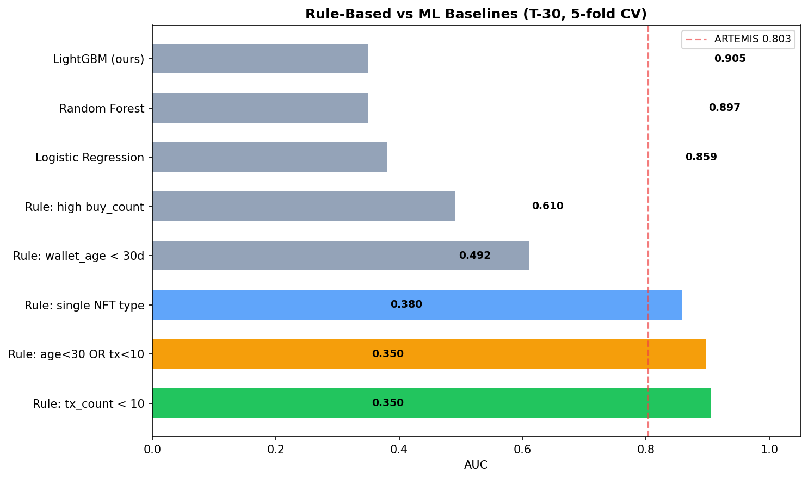
论文章节对应
1. Introduction
提出问题：事后检测无法预防，需要事前预警
[02]
2. Background
Blur S2 积分机制；ARTEMIS 综述；sybil 行为分类
[11][21]
3. Method
时间截断设计；18 特征工程；LightGBM 训练流程
[01][02]
4. Experiments
主结果 / 消融 / 特征分析 / 泛化 / 跨协议
[02][03][04][06][07][08][10][12][14][16][17][20][21]
5. Discussion
GNN 事前失效；Gitcoin 标注定义；逃避成本博弈；Two-stage open-world；局限性
[09][15][18][23][25][26]
6. Conclusion
主结论汇总；LayerZero 跨类型迁移；规则 vs ML；未来方向
[24][27][19]
状态
Done 01-27 全部完成
Done LayerZero 29,849 地址已抓
Next LZ 时序消融（第二事件验证）
Done LayerZero 29,849 地址已抓
Next LZ 时序消融（第二事件验证）